The Vitrine La Vitrine
Thirteen Boards. Five Continents. Five Thousand Years. Treize Plateaux. Cinq Continents. Cinq Mille Ans.
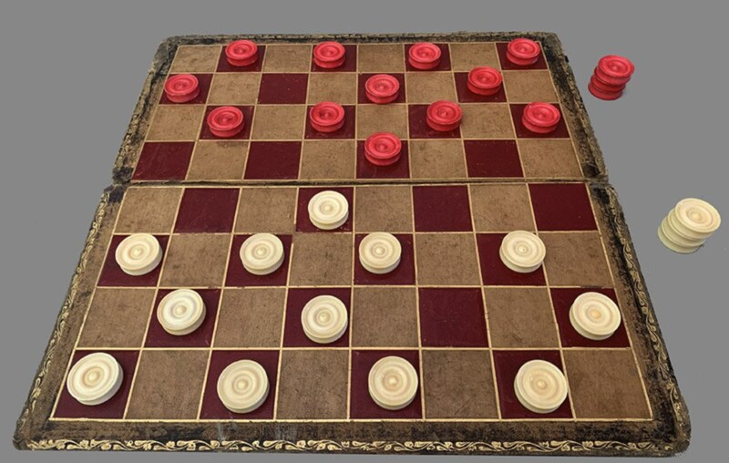
Five thousand years of capture and forced jumps — from Ur to the village square. Antique boxwood, ivory, and bone sets still surface at auction. Cinq mille ans de captures et de prises obligatoires — d'Ur à la place du village. Coffrets anciens en buis, ivoire et os apparaissent encore en vente.
→ Read the chronicle→ Lire la chronique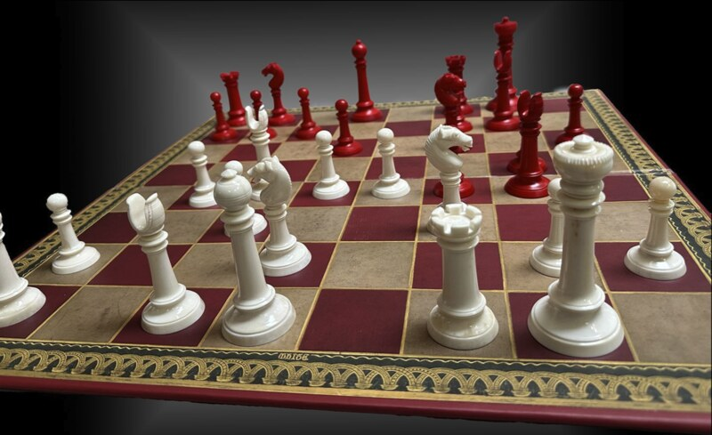
From Gupta Chaturanga to Persian Shatranj to Mughal-court ivory, Vizagapatam compendia, Anglo-Indian Lund and Muslim Staunton — the visual atlas of thirteen antique Indian chess traditions. The collector's guide before the hunt begins. Du Chaturanga gupta au Shatranj persan, en passant par l'ivoire de cour moghole, les coffrets de Vizagapatam, le Lund anglo-indien et le Staunton musulman — l'atlas visuel des treize traditions antiques d'échecs indiens. Le guide du collectionneur avant que la chasse ne commence.
→ Read the Atlas of Indian Chess→ Lire l'Atlas des Échecs d'Inde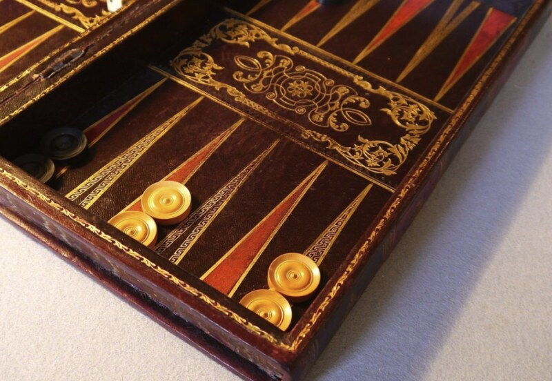
Played in Roman taverns as Tabula, in Sassanid courts as Nard, in Versailles as Tric-Trac. The doubling cube is a 1920s New York invention — barely a century old. Joué dans les tavernes romaines comme Tabula, dans les cours sassanides comme Nard, à Versailles comme Tric-Trac. Le videau est une invention new-yorkaise des années 1920.
→ Read the sources companion→ Lire les sources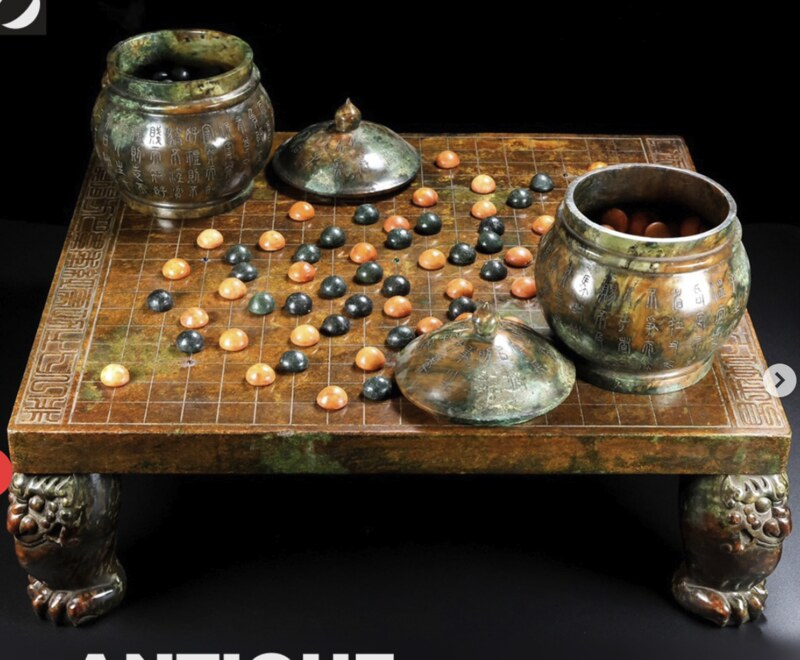
The most strategically complex game ever invented. Kaya wood boards, slate-and-shell stones, lacquered bowls — the Japanese tradition of equipment is itself an art. Le jeu le plus complexe stratégiquement jamais inventé. Plateaux en kaya, pierres en ardoise et coquillage, bols laqués — la tradition japonaise est en soi un art.
Chronicle in preparationChronique à venir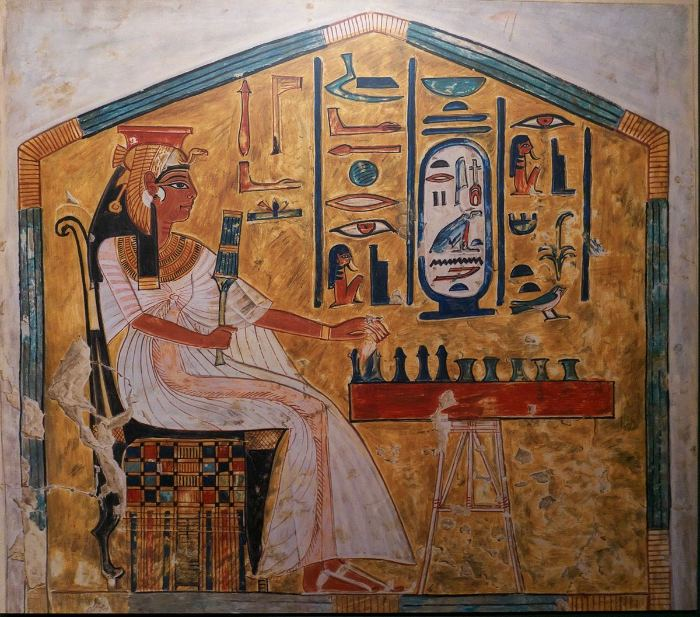
Played in this world and the next. Tutankhamun was buried with four sets. Rules survive only in fragments — modern reconstructions are scholarly best guesses. Joué dans ce monde et dans l'autre. Toutânkhamon fut enterré avec quatre exemplaires. Les règles ne survivent qu'en fragments — les reconstitutions modernes sont savantes.
Chronicle in preparationChronique à venir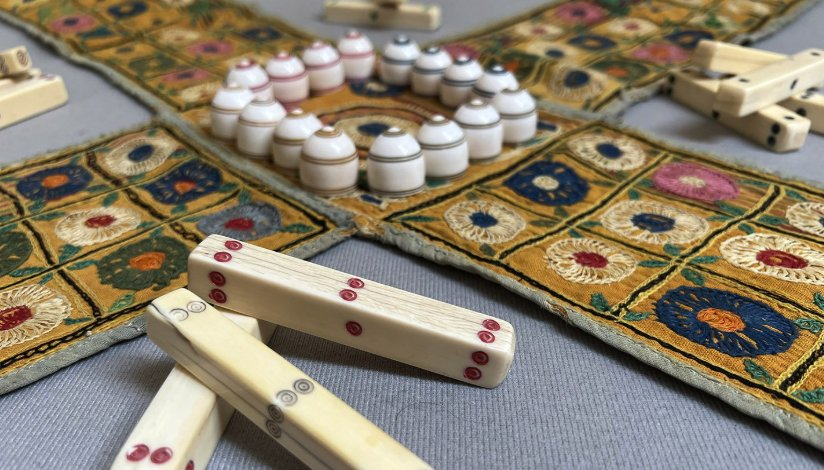
Akbar the Great played life-sized Pachisi in the courtyards of Fatehpur Sikri, with palace women as pieces. Modern Ludo is its English commercial descendant. Akbar le Grand jouait au Pachisi grandeur nature dans les cours de Fatehpur Sikri, avec les femmes du palais comme pions. Le Ludo moderne en est le descendant.
Chronicle in preparationChronique à venir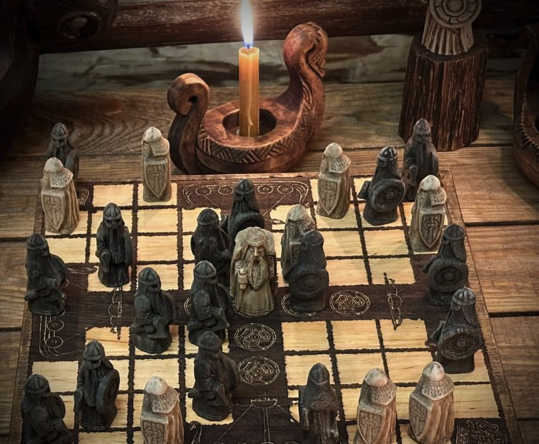
The asymmetric Viking game — a king and his bodyguards escape an attacker's siege. Displaced by Chess after the Norman conquest. Reborn through archaeology. Le jeu viking asymétrique — un roi et ses gardes du corps fuient un siège. Supplanté par les Échecs après la conquête normande. Renaît grâce à l'archéologie.
Chronicle in preparationChronique à venir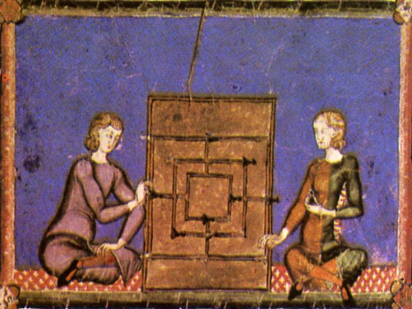
Boards carved into Egyptian temples, Roman forum stones, English cathedral cloisters. Played by waiting soldiers, bored monks, and tavern keepers across two millennia. Plateaux gravés dans les temples égyptiens, le forum romain, les cloîtres anglais. Joué par les soldats, les moines, les aubergistes pendant deux millénaires.
Chronicle in preparationChronique à venir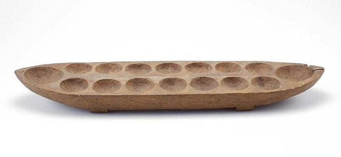
Hundreds of regional variants across Africa, the Levant, and the Philippines. Played in dirt holes by herders, in rosewood by kings. Pure mathematics, pure rhythm. Des centaines de variantes régionales en Afrique, au Levant, aux Philippines. Joué dans la poussière par les bergers, en bois de rose par les rois. Pure mathématique.
Chronicle in preparationChronique à venir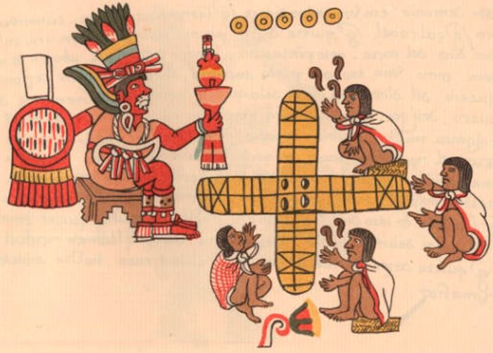
A cross-shaped racing game played by Aztecs, Toltecs, and Maya. Banned by Spanish conquistadors in the 16th century — too tied to ritual gambling. Reconstructed from codices. Jeu de course en croix joué par Aztèques, Toltèques, Mayas. Interdit par les conquistadors espagnols au 16e siècle — trop lié au jeu rituel. Reconstitué grâce aux codex.
Chronicle in preparationChronique à venir
A river divides the board. The general cannot leave his palace. The cannon must jump to capture. Chess as imagined under the Tang dynasty — entirely its own logic. Une rivière divise le plateau. Le général ne peut quitter son palais. Le canon doit sauter pour capturer. Les Échecs imaginés sous les Tang — sa propre logique.
Chronicle in preparationChronique à venir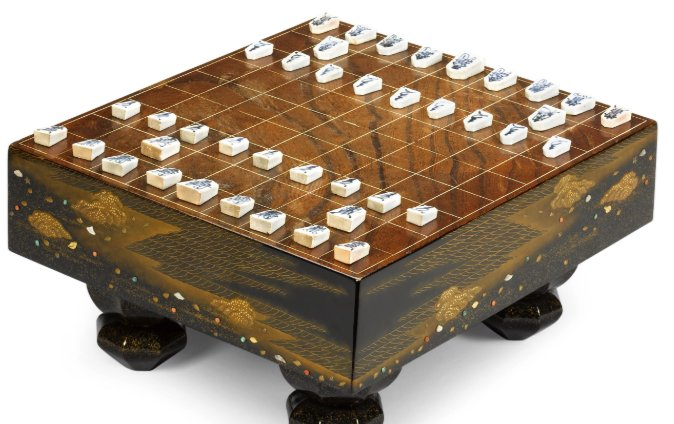
Captured pieces switch sides — a brutal, unforgiving feature borrowed by no other Chess variant. Calligraphic kanji on five-sided wooden tiles. Pure samurai logic. Les pièces capturées changent de camp — caractéristique brutale, sans pareille. Kanji calligraphiques sur tuiles en bois à cinq côtés. Logique pure du samouraï.
Chronicle in preparationChronique à venir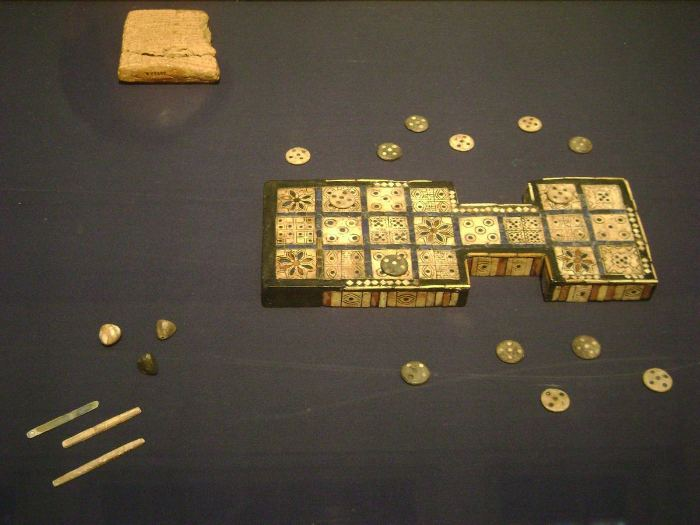
The oldest playable game in human history. Found in the royal tombs of Ur. Rules deciphered from a Babylonian tablet by Irving Finkel of the British Museum in 1981. Le plus ancien jeu jouable de l'histoire humaine. Trouvé dans les tombes royales d'Ur. Règles déchiffrées d'une tablette babylonienne par Irving Finkel en 1981.
Chronicle in preparationChronique à venir